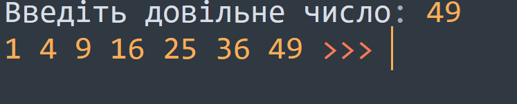
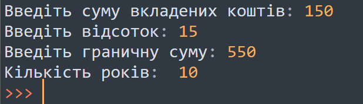
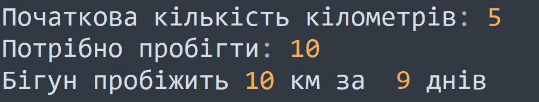

Тема 4.
Цикл While
Теорія
Завдання
Завдання №1
Дане ціле число N, знайдіть всi квадрати натуральних чисел, що не перевищують N, в порядку зростання.

Завдання №2
Вклад у банку складає х грн. Щорічно він збільшується на p відсотків. Визначте, через скільки років вклад складе щонайменше у грн.

Завдання №3
В перший день спортсмен пробіг х кілометрів, а потім він збільшував свій пробіг на 10% від попереднього значення. Знайти за скільки днів він пробіжить y кілометрів.
